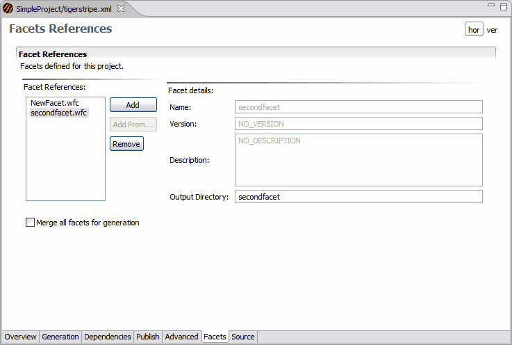

Merging Facets for Generation
When generating a project where multiple facets have been specified, you can perform the generation either separately on each facet, or at one time, on a virtual facet that merges all of the facets in your project.

To merge facets at generation
- Navigate to the Facets tab in your Tigerstripe Perspective.
- Select Merge all facets for generation.
- Generate your project.
- Click Save to save our project
Related Topics
Defining a Service Contract Facet
Defining the Facet Scope
Defining an Active Facet
Project Generation with Active Facets
Defining Facets for Tigerstripe Projects
 Merging Facets for Generation
Merging Facets for Generation
-->
© copyright 2005, 2006, 2007 Cisco Systems, Inc. - All rights reserved